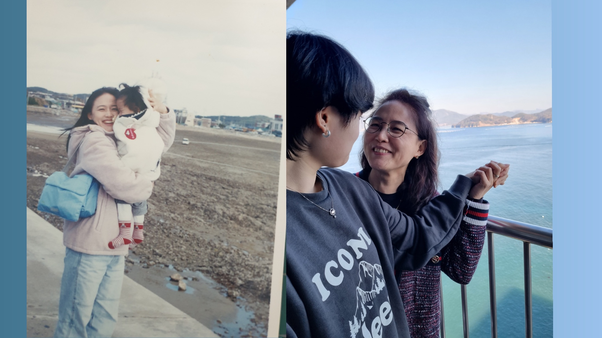

To. 엄마

엄마, 나 여진이야. 최근에 앨범 사진 정리를 하다가 이 사진을 발견했어.
20여년이 지나 흐려진 사진과 핸드폰 속 사진 간에는 20여년의 시간이 자리하고 있지만,
사진 속에서 엄마가 나를 보고 웃는 모습은 변하지 않은 것 같아서 뭉클했어.
우리가 같은 공간에서 매일 매일을 보내느라, 나는 우리에 대해 생각해 볼 생각을 미처하지 못했어.
그래서 내 생일이라는 기념일이 고마운 것 같아. 이번 기회에 다시 우리 가족,
엄마에 대해 생각해볼 수 있었거든.
엄마가 사진 속에서 그렇듯이, 나도 앞으로는 엄마에게 저렇게 활짝 웃어줘야지.
그리고 저렇게 엄마가 활짝 웃을 수 있는 날을 만들어가야지.
물론 어떤 날은 맑고 또 어떤 날은 흐리겠지만, 구름이 드리워지는 건 우리의 하루일 뿐이고 우리의 전부가 아니니까.
인생이란 여정에서 엄마는 나에게 달빛과도 같아. 아름답고, 길을 잃을 때 길을 밝게 비춰주고, 평생 쫓고 싶은 달, 엄마.
고마워, 항상 나와 함께 해 줘서!
사랑해 엄마.